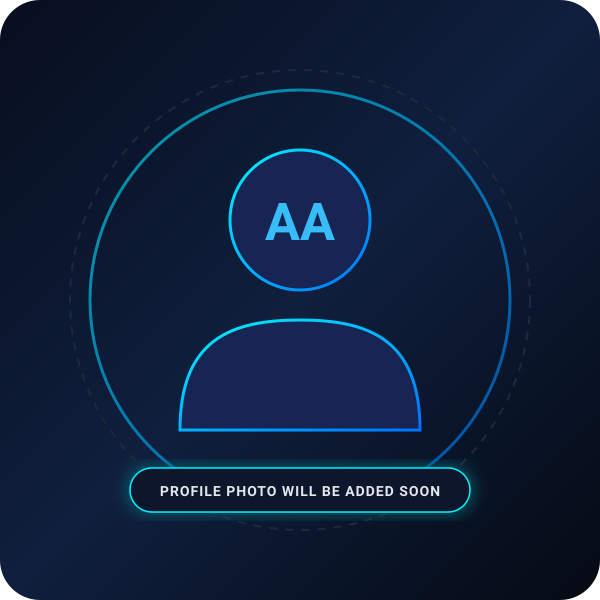

Hi, I'm
Afham Ahamed
Building Ideas. Creating Solutions. Growing with Technology.
Crafting modern web architectures, scalable desktop software, and practical AI-assisted solutions from Sri Lanka.
HNDIT SLIATE
Sammanthurai Campus
Brainiacs
IT & Digital Trainee
Who I Am & My Journey
Turning complex technical challenges and creative ideas into practical, intuitive digital solutions.
Abdul Nazar Afham Ahamed
Web Developer • Software Developer • AI Enthusiast
I am a creative IT professional from Sammanthurai, Eastern Province, Sri Lanka. I have completed my Higher National Diploma in Information Technology at SLIATE Sammanthurai and I am currently gaining practical experience as a trainee at Brainiacs.
I am passionate about web development, software development, graphic design, and creative digital solutions. I enjoy creating modern websites, attractive digital designs, professional branding materials, and user-friendly digital experiences.
Before completing my HNDIT, I successfully completed the NVQ Level 4 qualification in Information Technology, which provided me with a strong foundation in practical IT systems and technical skills.
I have also completed a Diploma / English Course at the British Council Sri Lanka, which has supported my communication and professional collaboration skills.
I continuously improve my technical and creative abilities and enjoy turning ideas and real-world problems into practical, intuitive and professional digital solutions.
Practical IT Systems
Solid foundation in full-stack architecture, database modeling, and software logic.
AI & Modern Tools
Exploring AI-assisted development tools and modern workflows for efficient building.
Career Goals & Motivation
Focused on long-term professional mastery, impactful software engineering, and artificial intelligence.
Why I Chose IT
I chose Information Technology because I am interested in technology, software development, and creating practical solutions to real-world problems. I enjoy learning new technologies, building applications, solving problems, and continuously improving my technical skills. I believe IT provides opportunities to continuously learn, innovate, and build a meaningful professional career.
Current Career Goal
My current goal is to strengthen my technical and professional skills through practical experience in software and web development. I want to work on real-world projects, improve my programming knowledge, understand modern development practices, and grow as an IT professional.
Future Career Goal
My long-term goal is to become a skilled Software Developer and AI-focused technology professional. I want to build innovative and useful software solutions, gain professional industry experience, and continuously develop my knowledge in modern technologies and Artificial Intelligence.
Areas of Interest
What Makes Me Different
"I continuously learn new technologies and enjoy combining software development, creative design and AI tools to create practical digital solutions."
To work on real-world projects and build innovative digital solutions with strong expertise in web development, software systems, and AI.
Technical Skills & Technologies
Technologies and domains I actively work with, learn, and implement across academic and real-world projects.
Programming Languages
Web Development
Database Systems
Frameworks & Libraries
Tools & Environments
AI & Advanced Technology
Mobile Development
Core Engineering Competencies
Languages Spoken:
Education & Experience
Academic milestones, technical certifications, and ongoing professional industry training.
Education
Higher National Diploma in Information Technology (HNDIT)
SLIATE ATI, Sammanthurai, Sri Lanka
Higher National Diploma in Information Technology focusing on software development, web technologies, relational databases, systems programming, and practical IT engineering.
English Course
British Council Sri Lanka
Completed part-time English program supporting professional collaboration, technical documentation, and verbal communication in software teams.
G.C.E. Advanced Level
KM/STR/Muslim Madhya Maha Vidyalaya National School, Sammanthurai
Successfully completed G.C.E. Advanced Level education, building essential analytical reasoning and academic foundations.
Experience & Training
Trainee – IT / Digital Development
Brainiacs • Sri Lanka
Currently gaining practical experience at Brainiacs by working with IT, digital development and creative technology-related activities while improving technical and professional skills.
- Assist with IT and digital development tasks.
- Work on website and software-related activities.
- Support digital content and creative development activities.
- Learn and apply modern development technologies.
- Explore AI-assisted development tools and workflows.
- Improve practical problem-solving skills in active environments.
- Develop professional teamwork and cross-discipline communication skills.
Featured Projects
Selected software applications, enterprise desktop tools, and community platforms built with real code and databases.
Loading Featured Projects...
Automatic GitHub Repositories
Directly synchronized with GitHub's REST API. Any newly published public repository appears here automatically.

Afham Ahamed
@afhamahamed7126-dotcom
Connecting to GitHub API...
Loading GitHub projects...
Fetching public repositories from @afhamahamed7126-dotcom
Certificates & Credentials
Official academic diplomas, English proficiency accreditations, and technical certificates.
Recognitions & Achievements
Verified academic achievements and verified milestone acknowledgments.
Community Activities
Active engagement in humanitarian support, social development, and voluntary technology initiatives.
Integrated Friends Development & Humanitarian Association (IFDHA)
Member / Web Developer • Started: 2020 • Sammanthurai, Sri Lanka
A community-focused organization involved in humanitarian, social, community service and development activities. Providing active technology-related support, administrative web management, and volunteering across local initiatives.
Key Contributions & Activities:
Interests & Strong Qualities
The core professional traits and genuine technological curiosities that shape my daily work.
Strong Qualities
Core Interests
Curriculum Vitae
Download or view my complete curriculum vitae containing detailed educational qualifications, practical coursework, technical stack competencies, and contact information.
Let's Build Something Together
Have a project idea, collaboration opportunity or simply want to connect? Let's talk.
Direct Channels
I welcome opportunities for software and web development roles, freelance collaborations, and technical partnerships.
Send Me a Message
Messages are securely processed and dispatched to my inbox.